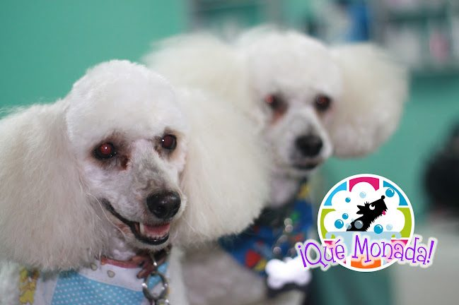
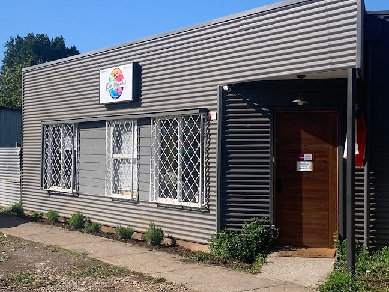
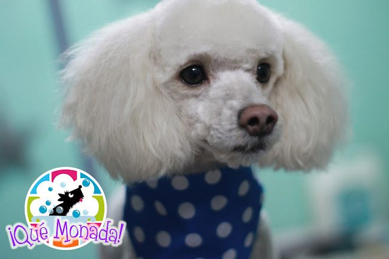
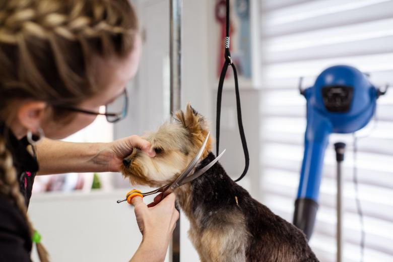
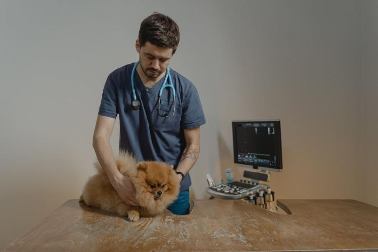
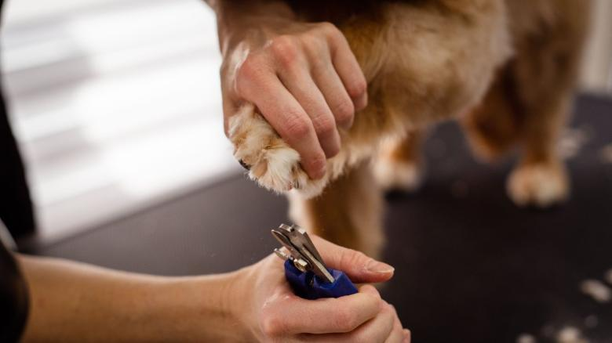

El agua tibia y de a poco
Se moja desde las patas hacia arriba y se deja la cabeza para el final. El chorro directo en la cara es lo que convierte un baño incómodo en un baño peleado, y esa pelea el perro se la acuerda para la próxima vez.
Propuesta de sitio web — preparada para ¡Qué Monada! por CristalWeb
Revisado el 31-08-2026: quemonada.cl está pagado y en línea, pero lo que se ve al entrar no es la veterinaria — es la página de fábrica del hosting, con el instructivo para el administrador («Inicie sesión en el panel de control», «Click Creador Web Pro», «Publish»). Cualquier cliente que busque el nombre llega a eso.
Veterinaria y peluquería · Pitrufquén
En un pueblo, subir al perro al auto y bajarlo en el centro es media mañana. La gracia de tener veterinaria y peluquería bajo el mismo techo es exactamente esa: se deja para el baño y, en la misma pasada, queda hecho el control. Nadie lo tiene escrito, y es lo primero que un dueño quiere saber.
La tina no se mueve.
Lo que cambia es lo que pasa
alrededor de ella.
Baño y control
Ésta es la ventaja real de la casa y no está escrita en ninguna parte. Lo de abajo es cómo funciona un combo así en general; lo que hacen ustedes exactamente, lo confirman y se escribe con su nombre.
Al dejar
El animal queda en peluquería con la hora acordada. Es el momento en que el dueño dice si hay algo que le preocupa —una picazón, una uña, una oreja— y ese aviso es lo que hace posible todo lo demás.
Mientras está adentro
Con el animal ya en la casa y mojado hasta la piel, es cuando mejor se ve lo que en seco no se nota: la piel, las orejas, las uñas, un bulto. Si hay veterinario en el mismo local, revisar no cuesta un segundo viaje. falta: confirmar si ustedes coordinan baño y control así
Al retirar
El dueño escucha una vez lo del baño y lo del control juntos, en vez de dos veces en dos lugares distintos. Si hay algo que tratar, se agenda ahí mismo. falta: si entregan algo escrito al retirar
Lo que hay que decir de frente
No es una consulta veterinaria completa disfrazada de baño, y conviene decirlo así. Es una revisión de lo que se ve. Si aparece algo, se conversa y se agenda como corresponde: nadie diagnostica a un perro entre el shampoo y el secador.
La sección existe porque en Pitrufquén el viaje cuenta. Un dueño que vive a diez kilómetros no está comparando precios: está calculando cuántas veces tiene que sacar el auto.

La mitad que nadie explica
Un baño mal secado se paga con hongos, y una tusa mal hecha se paga con un mes de perro raro. Por eso el orden importa: primero se revisa el pelaje, después se decide si se peina o se corta, y recién ahí se moja. Contarlo antes evita la conversación incómoda de después.
El perro al que no le gusta el agua
Casi todas las casas tienen uno: el que ve la manguera y se esconde. No hay truco mágico y nadie debería prometerlo — hay oficio, que es otra cosa, y se puede explicar.
Se moja desde las patas hacia arriba y se deja la cabeza para el final. El chorro directo en la cara es lo que convierte un baño incómodo en un baño peleado, y esa pelea el perro se la acuerda para la próxima vez.
Buena parte del miedo no es al agua: es a patinar. Una alfombra de goma en la tina cambia el comportamiento de un perro nervioso más que cualquier otra cosa.
Para muchos es peor que el agua. Se puede secar con toalla y aire tibio a distancia, y tarda más — pero tarda menos que forzar a un animal que ya entró en pánico.
Si el animal pasa de incómodo a asustado de verdad, se para. Se termina lo mínimo, se seca y se conversa con el dueño qué hacer para la próxima. Un baño no vale un animal traumatizado. falta: cómo lo manejan ustedes y qué le avisan al dueño
Esto es manejo de peluquería, no indicación veterinaria: no promete que ningún perro deje de tenerle miedo al agua y no reemplaza ninguna consulta. Lo escribió quien hizo el sitio y lo revisa y lo firma la clínica antes de publicarse.
Un viaje, dos cosas resueltas
Veterinaria y peluquería bajo el mismo techo
Para pedir hora
Es el número publicado en su ficha de Google.


Fotos publicadas por la propia veterinaria: llevan su logo estampado en la esquina. No son de banco de imágenes — son perros que atendieron ellos.



falta: el antes y el después del mismo perro, y una del box de atención. Con eso la página deja de mostrar el resultado y pasa a mostrar el trabajo.
Estas seis ya aparecen más arriba en la página. Vuelven acá en otro tamaño porque una sola pasada de imágenes deja el scroll vacío, y porque de cerca se ven cosas que en grande se pierden. La procedencia de cada una está en imagenes/FUENTES.txt.




El 4,6 con 40 reseñas de su ficha de Google, el teléfono 9 8230 3142, y que quemonada.cl está pagado pero muestra la página de fábrica del hosting. Eso último se revisó el 31-08-2026 y se puede comprobar abriendo el dominio.
Los cuatro pasos del viaje y las cuatro cartas del baño. Describen cómo funciona el oficio, no cómo funcionan ustedes: por eso van marcados y sin firma.
Si de verdad coordinan baño y control en la misma visita, si entregan algo escrito al retirar, y cómo manejan al perro que se asusta. Con esas tres respuestas esta página deja de describir el rubro y pasa a describirlos a ustedes.